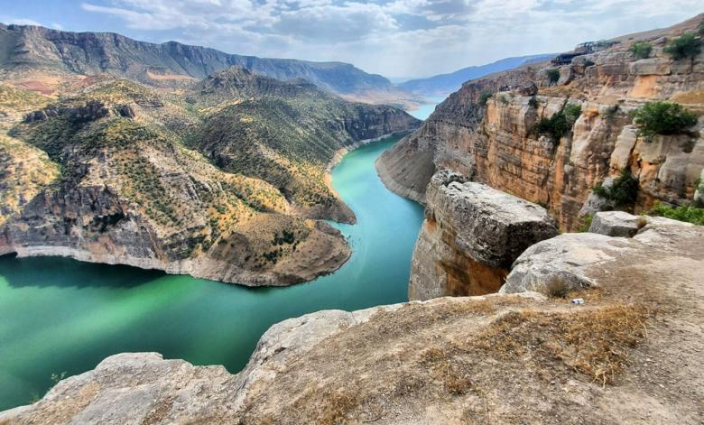
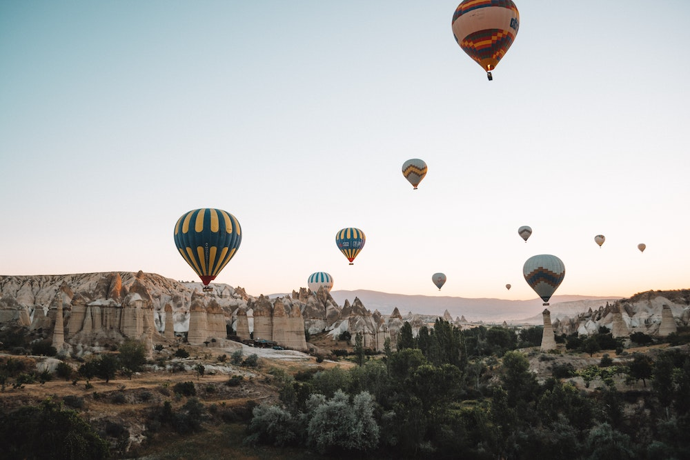
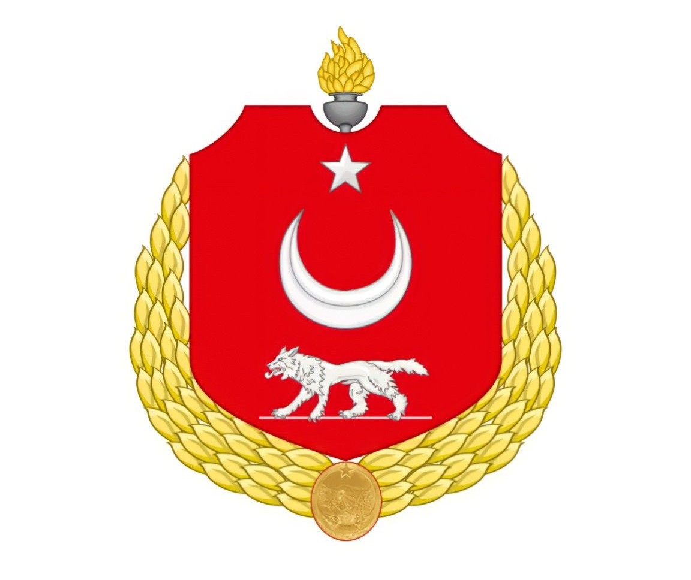
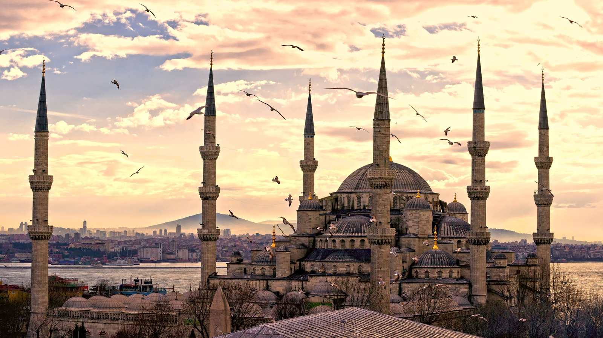
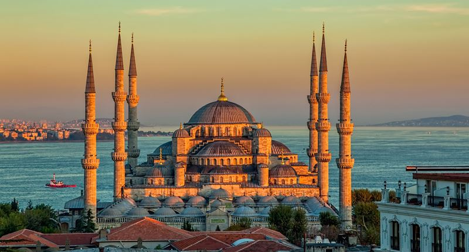

Туреччина та її краєвиди




Візитна картка
- Площа: 780,6 тис. км2
- Населення: 76 806 000 млн осіб (2010)
- Столиця: Анкара
- Офіційна назва: Турецька Республіка
- Урядовий устрій: Парламентська республіка
- Законодавча влада: Великі національні збори
- Адміністративна структура: унітарна держава (81 провінція, об’єднана у 8 географічних регіонів)
- Поширені релігії: мусульмани-суніти
- Грошова одиниця: турецька ліра
Державний прапор
Державний прапор - червоний колір прапора Туреччини походить від Умара, правителя Арабського халіфату в 634-644 роках і завойовника Палестини, Єгипту та Месопотамії. У 14 столітті червоний став кольором Османської імперії. Півмісяць із зіркою є символом ісламу.
Значення Турецького прапора
Кожен громадянин країни має знати, як виглядає та що означає прапор Туреччини. Швидше значення має релігійний та історичний характер:
- Червоний колір символізує битви, пролиту кров за незалежність.
- Півмісяць та зірка є ісламськими символами. Вони присутні в багатьох інших країнах світу, в Туреччині вони, як і раніше, присутні в повсякденному житті людей.
Символ Туреччини в деякому плані віддалено схожий на прапор, який мала комуністична імперія, а півмісяць нагадує радянський серп.

Державний герб
Державний герб - офіційно затвердженого герба в країні немає. Замість герба в багатьох державних установах використовується напівофіційна емблема — червоний еліпс із вертикально орієнтованим півмісяцем і зіркою над ним. Таке ж зображення розташоване на державному прапорі Туреччини, з тією лише різницею, що півмісяць орієнтований горизонтально.

Історія
Сучасна Туреччина є прямим нащадком могутньої Османської імперії, яка існувала з 1299 по 1922 рік і в період розквіту наводила жах на весь світ. Її кордони були максимально розширені в 16-17 століттях в результаті ряду успішних військових кампаній. Спочатку маленька імперія з армією безмежно жорстоких і відважних яничарів, за кілька століть зуміла підкорити багато країн: від Австрії, Угорщини та Польщі в Європі до Західної Азії та кількох африканських регіонів.
Турецька республіка виникла в жовтні 1923 року: поразка османів у Першій світовій війні та народні повстання призвели до розпаду та поділу колись могутньої імперії. Першим президентом нової республіки став Мустафа Кемаль Ататюрк, людина, яку турки буквально обожнювали навіть після його смерті.
Країна пройшла дуже складний і болісний шлях розвитку. Скажімо, її валюта неодноразово знецінювалася до такої міри, що довелося друкувати купюри номіналом у кілька мільярдів лір. Проте зараз це індустріально розвинена країна, де динамічно розвиваються одразу декілька галузей промисловості: автомобільна, фармацевтична, хімічна, текстильна, шкіряно-взуттєва.

Туреччина
Це не тільки популярне туристичне місце, але й центр багатьох історичних подій і країна з унікальною культурою. Архітектурні пам'ятки і незвичайні традиції цієї країни привертають увагу людей у всьому світі.Подорож до Туреччини – це унікальний досвід, який пропонує незабутні пригоди та враження. Будь ви любителем пляжного відпочинку, історії та культури, природної краси або гастрономії, Туреччина задовольнить усі ваші туристичні бажання. Відкрийте для себе пишноту та різноманітність цієї дивовижної країни та створіть незабутні спогади на все життя.
Гарячі тури!Неймовірна Туреччина
Найдивовижніші факти про Туреччину
- Чоловічих перукарень в Туреччині більше, ніж жіночих - це раз. Чоловіків стрижуть виключно чоловіки, а жінок - жінки. Такі правила.
- Деякі продукти в Туреччині коштують набагато дешевше, ніж на Україні. Але є і просто нереальні ціни. Наприклад, овочі і фрукти коштують копійки, чого не скажеш про м'ясо.
- Скрізь, де є можливість, турки намагаються ховати електричні дроти під землю. Тому у них так гарно, зайві речі не псують пейзаж. Втім, конвеєрні відключення струму в Туреччині - не така вже й рідкість. Місцеві до них вже звикли, а от туристи - поки що ні.
- Будь ласка, переходьте дорогу уважно. Турки водять автомобіль дуже недбало і практично не помічають пішоходів. До речі, на вулицях можна зустріти «сімки» і «десятки» LADA.
- Кішки в Туреччині скрізь. У парках для них навіть будують спеціальні будиночки і періодично підгодовують. А ось собак на вулицях набагато менше. І вони носять сережки! Це відмітка із зазначенням муніципалітету, якому належить тварина.
- Багато турецьких дівчат одягаються по-європейські. Особливо це стосується молоді. Турецька дівчина в джинсах або навіть короткій спідниці - не така вже й рідкість.
- У Туреччині в пошані електротранспорт. І навіть не тому, що місцеві є затятими прихильниками екології. Просто паливо тут дуже дороге.
- В турецькому місті Стамбул Агата Крісті написала знаменитий роман «Вбивство у Східному експресі». Тепер в готелі Пера Пелес знаходиться невеликий музей.
- Іслам - основна релігія Туреччини. На території країни встановлено понад 78 тисяч мечетей. Це фантастична цифра.
- На території сучасної Туреччини знаходилось місто Троя і два з семи чудес світу - храм Артеміди і мавзолей Гелікарнас.
- Турки так люблять свого першого президента Ататюрка, що вішають його портрети практично у всіх магазинах.
- Туреччина - одна з небагатьох країн, яку омивають відразу чотири моря.
- Місто Анталія унікальне тим, що навесні туристи можуть скупатися в теплій воді Середземного моря і кататися на лижах. Подорож з літа в зиму за кілька годин!
- У 15 столітті тут ввели незвичайний закон. Він дозволяв жінкам подати на розлучення, якщо чоловік не вмів варити каву.
- Країна займає перше місце в світі за виробництвом фініків.
- Вода, хліб, чай в ресторанах подаються безкоштовно.

